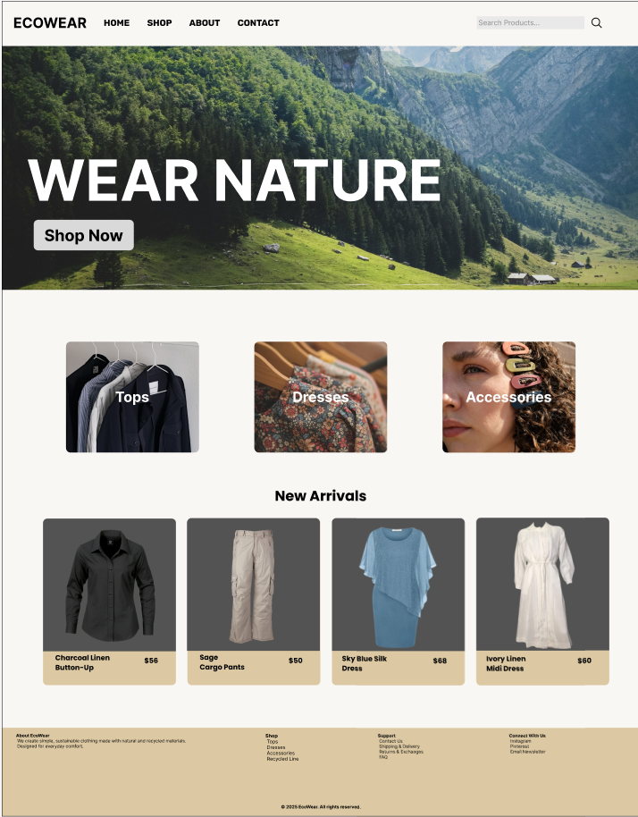
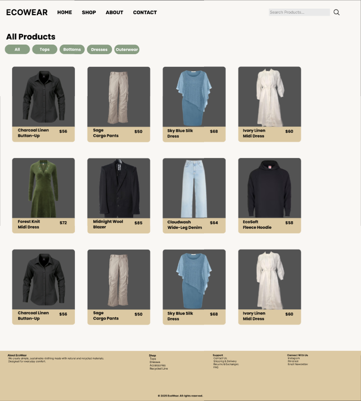
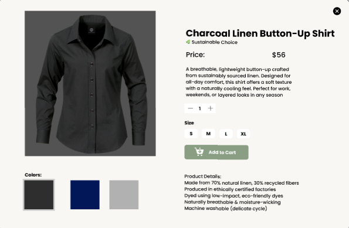
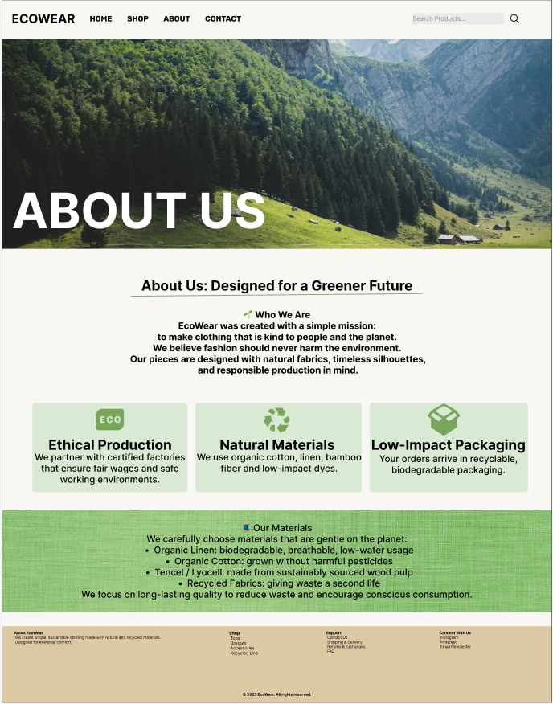

A collection of selected design and development work.
Development Projects
My Travel Packing List App
A React-based packing list app that allows users to add items, set quantities,
mark items as packed, and track overall progress. The app demonstrates component-based
architecture and state management using useState.
Main screen of the My Travel List app where users add items to pack.
Category: Development
Tech Used: React, JavaScript, JSX, CSS
Status: In Progress
Task Tracker App
A simple task manager that demonstrates basic CRUD functionality, state handling,
and clean UI for tracking to-dos or work items.
Category: Development
Tech Used: HTML, CSS, JavaScript
Status: Completed
Design Projects
Sustainable E-Commerce UI
A high-fidelity Figma prototype for a sustainable clothing store, built with reusable
components, hover interactions, product overlays, and a cosy nature-inspired theme.

Desktop home page with hero banner and featured categories.

All Products page with category filters and product grid.

Product detail overlay showing sustainable details and options.

About page describing the brand’s sustainable values.Mobile home design showcasing the responsive layout.